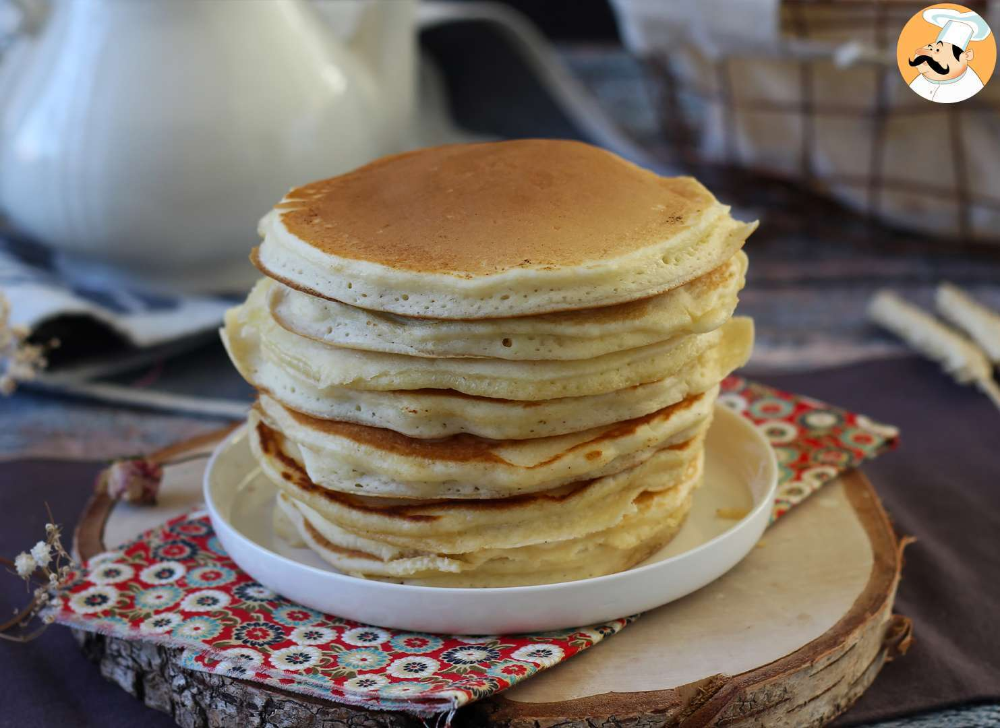

Pancakes

Description
Serve these pancakes with butter and syrup, or up the ante with toppings
such as sprinkles, chopped bittersweet chocolate, and sliced or
chopped fruit for a perfect breakfast.
Prep time: 5 mins
Cook time: 20 mins
Stand time: 3 mins
Total time: 28 mins
Servings: 6
Ingredients
- 2 cups whole milk
- 1/4 cup white vinegar
- 2 1/2 cups flour
- 3/4 cups sugar
- 2 teaspoons baking powder
- 1 teaspoon baking soda
- 1 teaspoon salt
- 3 large eggs
- 1 teaspoon vanilla extract
- 1 tablespoon butter, softened, or as needed,
for greasing, plus more for serving
- Toppings of choice
Step By Step
- Preheat a griddle to 300 degrees F (175 degrees C)
- Stir together milk and vinegar in a small bowl or a 4-cup
liquid measuring cup
- Whisk together flour, sugar, baking powder, baking soda, and salt
in a second bowl
- Beat eggs in a large bowl until smooth. Add vanilla and milk
mixture; whisk together. Add flour mixture to bowl with egg
mixture and whisk until just combined. Let rest 3 minutes
and gently stir again
- Melt some butter on the griddle, the carefully wipe with a
paper towel. Spoon batter in 1/3 cup portions into griddle.
Cook until bubbles form on surface of batter, about 2 1/2 minutes
- Flip pancakes and cook until browned on the other side, about
1 1/2 more. Repeat with remaining batter. Serve immediately with
butter and toppings